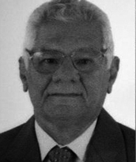

<style>
section {
        display: flex;
        flex-direction: row;
        align-items: center;
        justify-content: center;
        gap: 40px;
        margin: 40px 0;
    }


    .conteudo {
        max-width: 1000px;
        font-family: Arial, sans-serif;
        font-size: 16px;
        line-height: 1.6;
        color: #333;
        text-align: justify;
    }

    .conteudo p {
        
        margin-bottom: 16px;
    }
    img {
        width: 300px;
        height: auto;
        border-radius: 8px;
    }
</style>
<section>

    <div class="conteudo">

        <h2>HOSTERNO PAREIRA DA SILVA</h2>
        
        <p>Prefeito de Porto Nacional entre 1961 e 1965, Hosterno Pereira da Silva destacou-se por sua juventude, inteligência e espírito desportista. Iniciou sua gestão organizando as comemorações do centenário da elevação de Porto Nacional à categoria de cidade, evento que teve grande importância simbólica, pois o governo do Estado transferiu temporariamente sua sede para a cidade.<p> 
        <p>Apesar do início promissor e de sua postura conciliadora, enfrentou descontentamento entre os líderes de seu partido, o que o levou a renunciar antes do término do mandato. </p>
        
        
        
    </div>
    <div class="imagem">
        
        
        </div>

    

    


</section>